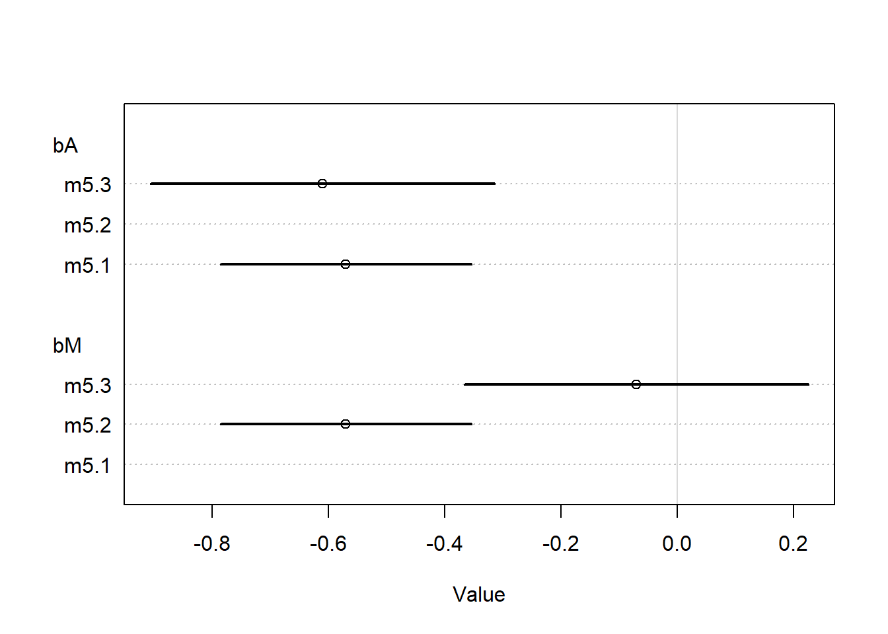
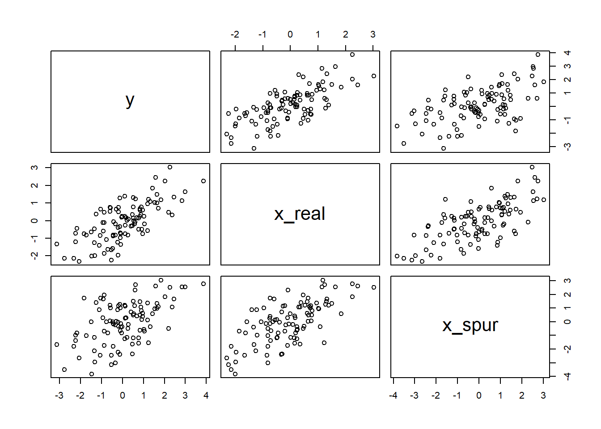
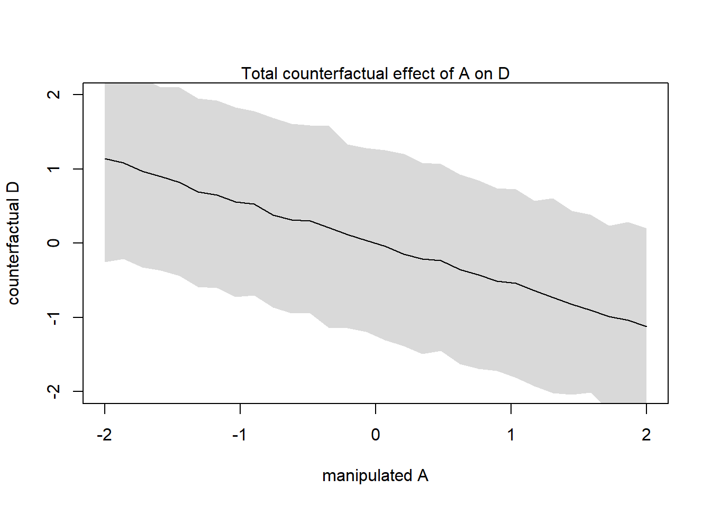
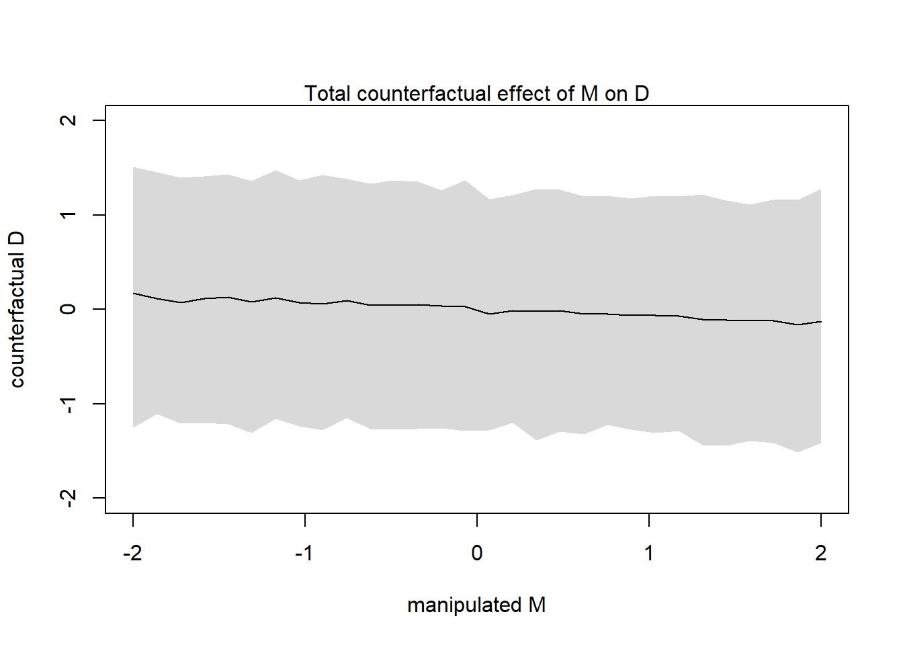
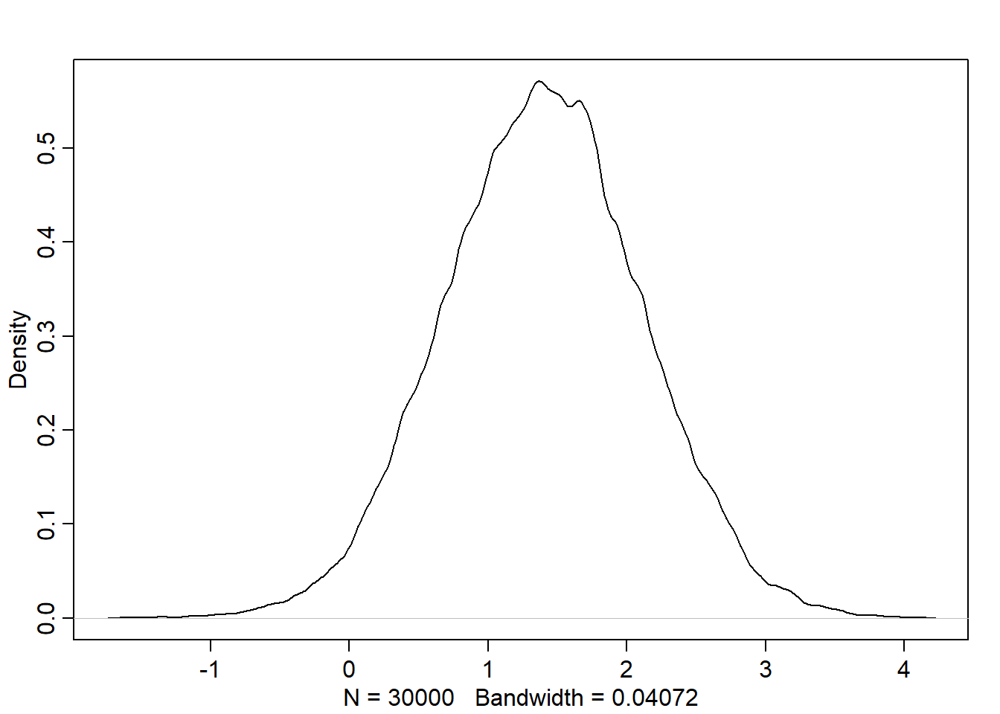
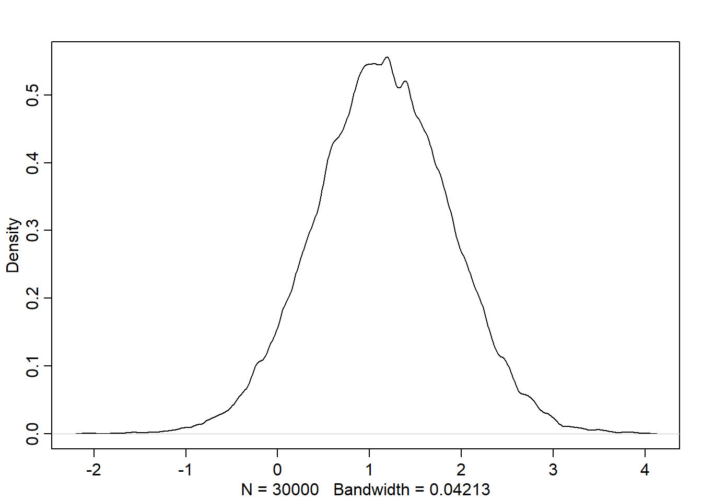
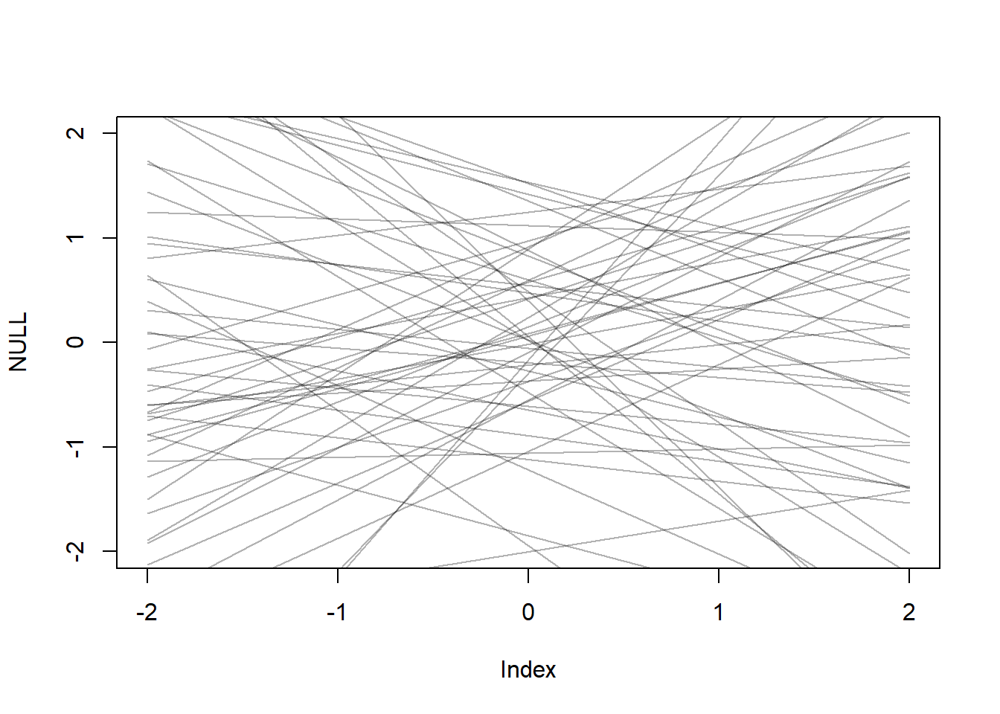
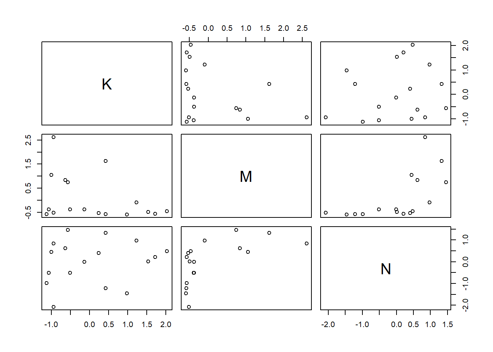
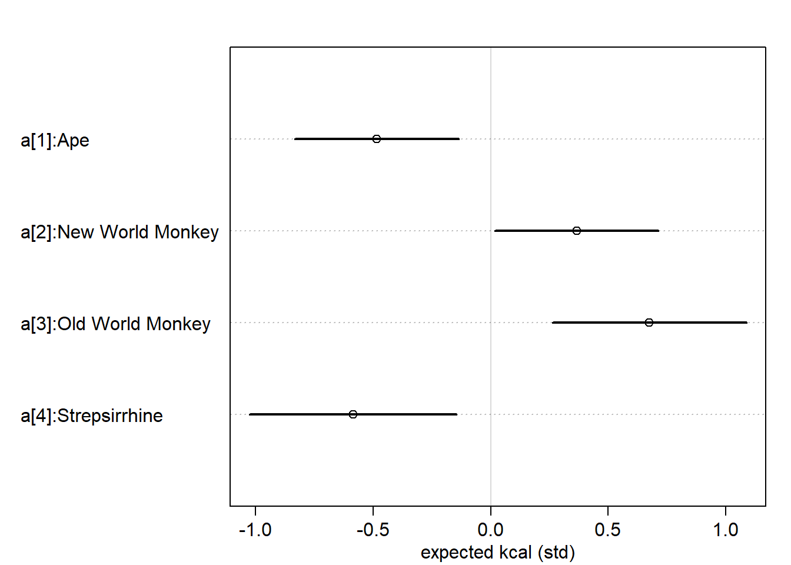

By standardizing the variables, we can say that if \(\beta_A=1\), then a change of 1 std. deviation in \(A_i\) is associated with a full std. deviation change in the outcome variable.
m5.1<-quap(alist( D ~dnorm(mu, sigma), mu <- a+bA*A, a ~dnorm(0, 0.2), bA <-dnorm(0, 0.5), sigma ~dexp(1) ),data=d)
m5.3<-quap(alist( D ~dnorm(mu, sigma), mu <- a + bM*M + bA*A , a ~dnorm(0, 0.2), bA <-dnorm(0, 0.5), bM <-dnorm(0, 0.5), sigma ~dexp(1) ),data=d)precis(m5.3)
mean sd 5.5% 94.5%
a -4.383618e-05 0.09707212 -0.1551838 0.1550962
bA -6.134983e-01 0.15097697 -0.8547887 -0.3722079
bM -6.546454e-02 0.15076527 -0.3064166 0.1754875
sigma 7.850766e-01 0.07783322 0.6606841 0.9094691
plot(coeftab(m5.1,m5.2,m5.3), par=c("bA", "bM"))

We can read this result as: > Once we know median age at marriage for a state, there is little or no additional predictive power in also knowing the rate of marriage in that state.
Intuitive explanation: The plot shows that the coefficient for the median age at marriage (bA) is quite stable across models (m5.1 and m5.3), while the coefficient for the marriage rate (bM) is less stable and moves towards zero when both predictors are included. This indicates that the median age at marriage is capturing most of the variability that the marriage rate would also explain. Thus, once you know the median age at marriage, the marriage rate doesn’t add much new information (predictive power) for the outcome of interest.
Results: - DAG 1 implies this result. - The association between marriage rate \(M\) and \(D\) divorce rate is spurious and caused by the influence of age of marriage on both \(M\) and \(D\). - Strictly speaking: \(D \amalg M|A\)
Simulating spurious association
Let’s simulate the association in the DAG:
N <-100x_real <-rnorm(N)x_spur <-rnorm(N, x_real)y <-rnorm(N, x_real)d <-data.frame(y, x_real, x_spur)pairs(d)

Plotting multivariate posterior
The book covered 3 kinds of plots:
1. Predictor residual
Predictor residual is the average prediction error when we use all of the other predictor variables to model a predictor of interest
data("WaffleDivorce")d <- WaffleDivorced$D <-standardize(d$Divorce)d$M <-standardize(d$Marriage)d$A <-standardize(d$MedianAgeMarriage)m5.4<-quap(alist( M ~dnorm(mu, sigma), mu <- a + bAM * A, a ~dnorm(0, 0.2), bAM ~dnorm(0, 0.5), sigma ~dexp(1) ), data=d)mu <-link(m5.4)mu_mean <-apply(mu, 2, mean)mu_resid <- d$M - mu_mean
This displays the causal implications of the model. They help you understand the model, as well as generate predictions for imaginary interventions and compute how much some observed outcome could be attributed to some cause.
The basic recipe: 1. Set the assumed scientific model (e.g. draw the DAG) 2. Pick the intervention variable (i.e. variable to manipulate) 3. Define the range of values to set the intervention variable to 4. Do the following simulation:
For each value of intervention variable:
For each sample in posterior:
Use the causal model to simulate the values of other variables including the outcome
DAG Model 1
For the divorce model (represented by the DAG 1), we need a set of functions that tell us how each variable is generated. We will follow the same approach we did in the m5.3 but with adding the influence of A on M, since in the previous models we cared about estimating A -> D influence. Now, we need to predict the consequences of manipulating A. Estimating the influence of A on M is conducting by regressing A on M.
d <-list()d$A <-standardize(WaffleDivorce$MedianAgeMarriage)d$D <-standardize(WaffleDivorce$Divorce)d$M <-standardize(WaffleDivorce$Marriage)m5.3_A <-quap(alist(# A -> D <- M D ~dnorm(mu, sigma), mu <- a + bM * M + bA * A, bM ~dnorm(0, 0.5), bA ~dnorm(0, 0.5), a ~dnorm(0, 0.2), sigma ~dexp(1),# A -> M M ~dnorm(mu_M, sigma_M), mu_M <- aM + bAM * A, bAM ~dnorm(0, 0.5), aM ~dnorm(0, 0.2), sigma_M ~dexp(1) ), data=d)
Let’s define the range of values for A
A_seq <-seq(from=-2,to=2,length.out=30)
Let’s do the simulate both M and D in order. The order is important because we have to simulate the influence of A -> M before simulating the joint Influence A -> M -> D
{plot(sim_dat$A, colMeans(s$D), ylim=c(-2,2), type="l",xlab="manipulated A", ylab="counterfactual D")shade(apply(s$D,2,PI), sim_dat$A)mtext("Total counterfactual effect of A on D")}

This plot shows the predicted trend in D including both paths: A -> D A -> M -> D
Let’s find the expected causal effect of increasing median age at marriage from 20 to 30:
# standardize 20 and 30 before inference (remember mean(A) = 26.1 and sd(A)=1.24)A_test <-c(20,30) -26.1/1.24sim2_dat <-data.frame(A=A_test)s2 <-sim(m5.3_A, data=sim2_dat, vars=c("M","D"))# find the expected causal effect on D: before increase - after increasemean(s2$D[, 2] - s2$D[,1])
[1] -5.622089
The result indicates a huge effect (5.7 std. dev).
DAG Model 2
Let’s simulate a counterfactual for an average state with A=0 and the causal effect of manipulating M on D (note: manipulating M requires removing the arrows entering into M resulting in the DAG model 2):
M_seq <-seq(from=-2,to=2,length.out=30)sim_dat <-data.frame(M=M_seq, A=0)s <-sim(m5.3_A, data=sim_dat, vars="D"){plot(sim_dat$M, colMeans(s), ylim=c(-2,2), type="l",xlab="manipulated M", ylab="counterfactual D")shade(apply(s,2,PI), sim_dat$M)mtext("Total counterfactual effect of M on D")}

It clear how the trend is less strong because there is no evidence for a strong influence of M on D.
Simulating counterfactual w/o sim function
Let’s simulate the counterfactual for manipulating A w/o using the sim function.
A_seq <-seq(from=-2, to=-2, length.out=30)post <-extract.samples(m5.3_A)# effect on M (distribution of M after simulating the counterfactual)M_sim <-with(post, sapply(1:30,function(i) rnorm(1e3, aM + bAM*A_seq[i], sigma_M)))dens(M_sim)

# effect on DD_sim <-with(post, sapply(1:30,function(i) rnorm(1e3, a + bA*A_seq[i] + bM*M_sim[i], sigma_M)))dens(D_sim)

Masked relationships
data("milk")d <- milkstr(d)
'data.frame': 29 obs. of 8 variables:
$ clade : Factor w/ 4 levels "Ape","New World Monkey",..: 4 4 4 4 4 2 2 2 2 2 ...
$ species : Factor w/ 29 levels "A palliata","Alouatta seniculus",..: 11 8 9 10 16 2 1 6 28 27 ...
$ kcal.per.g : num 0.49 0.51 0.46 0.48 0.6 0.47 0.56 0.89 0.91 0.92 ...
$ perc.fat : num 16.6 19.3 14.1 14.9 27.3 ...
$ perc.protein : num 15.4 16.9 16.9 13.2 19.5 ...
$ perc.lactose : num 68 63.8 69 71.9 53.2 ...
$ mass : num 1.95 2.09 2.51 1.62 2.19 5.25 5.37 2.51 0.71 0.68 ...
$ neocortex.perc: num 55.2 NA NA NA NA ...
Standardiaze the variables we want to use in the analysis
Model 1 (K ~ N): simple bivariate regression between K and N
\[
K_i \sim Normal(\mu_i, sigma)
\]\[
\mu_i = \alpha + \beta_N N_i
\] Define the model with vague priors
m5.5_draft <-quap(alist( K~dnorm(mu, sigma), mu <- a + bN * N, a~dnorm(0,1), bN~dnorm(0,1), sigma~dexp(1) ), data=d)
Error in quap(alist(K ~ dnorm(mu, sigma), mu <- a + bN * N, a ~ dnorm(0, : initial value in 'vmmin' is not finite
The start values for the parameters were invalid. This could be caused by missing values (NA) in the data or by start values outside the parameter constraints. If there are no NA values in the data, try using explicit start values.
We want to conduct the analysis with complete cases only (i.e. cases shouldn’t have NA in the variables of interest)
# keep the rows that corresponds to complete cases for the variables we are interested indcc <- d[complete.cases(d$K, d$N, d$M),]
m5.5_draft <-quap(alist( K~dnorm(mu, sigma), mu <- a + bN * N, a~dnorm(0,1), bN~dnorm(0,1), sigma~dexp(1) ), data=dcc)
Let’s simulate 50 priors:
prior <-extract.prior(m5.5_draft)xseq <-c(-2,2)mu <-link(m5.5_draft, post=prior, data =list(N=xseq)){plot(NULL, xlim=xseq, ylim=xseq)for (i in1:50) lines(xseq, mu[i,], col=col.alpha("black", 0.3))}

Let’s tighten the priors so that they stick closer and produce more reliable relationships:
m5.5<-quap(alist( K~dnorm(mu, sigma), mu <- a + bN * N, a~dnorm(0,0.2), bN~dnorm(0,0.5), sigma~dexp(1) ), data=dcc)prior <-extract.prior(m5.5)xseq <-c(-2,2)mu <-link(m5.5, post=prior, data =list(N=xseq)){plot(NULL, xlim=xseq, ylim=xseq)for (i in1:50) lines(xseq, mu[i,], col=col.alpha("black", 0.3))}
By incorporating both predictor variables in the regression, the posterior association of both with the outcome has increased. Also, the posterior means for N and M have both moved away from zero
pairs(~K + M + N, dcc)

Categorical variables
Binary categories
library(rethinking)data("Howell1")d <- Howell1
Using the sex as a predictor for height, we have this model definition:
\(h_i \sim Normal(\mu_i, \sigma)\)
\(\mu_i = \alpha + \beta_m m_i\)
\(\alpha \sim Normal(178, 20)\)
\(\beta_m \sim Normal(0, 10)\)
\(\sigma \sim Uniform(0,50)\)
Where \(m_i\) is an indicator variable that takes the value 1 if the case is male, and zero otherwise.
This implies that the prior would have more uncertainty for male cases. See how thhe prior for male is wider:
This property for prior is not accepted in complex regression models.
Another way to encode categorical vars is using index variable, which is scalable to non-binary categories:
\(h_i \sim Normal(\mu_i, \sigma)\)
\(\mu_i = \alpha_{SEX[i]}\)
\(\alpha_j \sim Normal(178, 20) \space for \space j=1..2\)
\(\sigma \sim Uniform(0,50)\)
Now, look how the same prior is assigned to each category. However, we need to construct the index variable as follows:
# 2 if male# 1 if femaled$sex <-ifelse(d$male==1,2,1)m5.8<-quap(alist( height ~dnorm(mu, sigma), mu <- a[sex], a[sex] ~dnorm(178,20), sigma ~dunif(0,50) ),data=d)# depth=2 is needed to show any vector parametersprecis(m5.8, depth =2)
[1] "Ape" "New World Monkey" "Old World Monkey" "Strepsirrhine"
d$clade_id <-as.integer(d$clade)
d$K <-standardize(d$kcal.per.g)m5.9<-quap(alist( K ~dnorm(mu, sigma), mu <- a[clade_id], a[clade_id] ~dnorm(0,0.5), sigma ~dexp(1) ),data=d)labels <-paste("a[", 1:4, "]:",levels(d$clade), sep="")plot(precis(m5.9, depth=2, pars ="a"), labels=labels, xlab="expected kcal (std)")

Exercises
Hard
1.In the divorce example, suppose the DAG is: M → A → D. What are the implied conditional independencies of the graph? Are the data consistent with it?
library(rethinking)library(daggity)
Error in library(daggity): there is no package called 'daggity'
dag <-dagitty('dag{M -> A -> D}')impliedConditionalIndependencies(dag)
D _||_ M | A
This is the same implied conditional independency that the data is consistent with as discussed in the chapter.
Assuming that the DAG for the divorce example is indeed M → A → D, fit a new model and use it to estimate the counterfactual effect of halving a State’s marriage rate M. Use the counterfactual example from the chapter (starting on page 140) as a template
Fit the new model
data("WaffleDivorce")d <-list()d$A <-standardize(WaffleDivorce$MedianAgeMarriage)d$D <-standardize(WaffleDivorce$Divorce)d$M <-standardize(WaffleDivorce$Marriage)# M -> A -> DmH2 <-quap(alist(# A -> D D ~dnorm(mu, sigma), mu <- a + bA * A, a ~dnorm(0,0.2), bA ~dnorm(0, 0.5), sigma ~dexp(1),# M -> A A ~dnorm(mu_A, sigma_A), mu_A <- a_A + bM * M, a_A ~dnorm(0,0.2), bM ~dnorm(0, 0.5), sigma_A ~dexp(1) ),data = d)
Simulate the counterfactual effect of having a State’s marriage rate M
{plot(sim_dat$M, colMeans(s$D), ylim=c(-2,2), type="l",xlab="manipulated M", ylab="counterfactual D")shade(apply(s$D,2,PI), sim_dat$M)mtext("Total counterfactual effect of M on D")}